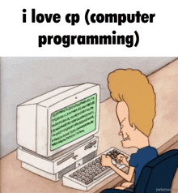

Get Notes from Augucoding Website

What is HTML?
HTML, or HyperText Markup Language, is the standard language used for creating and structuring content on the web. It defines the elements and layout of web pages by using a system of tags and attributes. These tags delineate various types of content, such as headings, paragraphs, links, images, and other multimedia elements. The fundamental role of HTML is to provide a framework for presenting and organizing information, ensuring that web browsers can render and display content consistently across different platforms.What is CSS?
CSS, or Cascading Style Sheets, is a stylesheet language used to control the presentation and layout of web pages written in HTML. It allows web designers and developers to apply styles such as colors, fonts, spacing, and positioning to HTML elements, enabling the separation of content from design. By defining styles in CSS, you can create visually appealing and consistent designs across different devices and screen sizes, enhancing the user experience and making it easier to maintain and update the look of a website.What is PHP?
PHP, which stands for Hypertext Preprocessor, is a server-side scripting language designed primarily for web development. It is embedded within HTML and executed on the server, generating dynamic content that is sent to the client's browser. PHP is commonly used to build and manage databases, handle form submissions, and create session management systems. Its ability to interact with various databases, such as MySQL, makes it a powerful tool for developing data-driven websites and applications. One of PHP's key strengths is its flexibility and ease of integration with other technologies. It can be embedded directly into HTML or used in conjunction with frameworks and content management systems like WordPress, Joomla, and Drupal. PHP's extensive standard library and active community contribute to its robustness, making it a popular choice for building everything from small personal websites to large-scale enterprise applications. Its widespread use and continual development ensure that it remains relevant in the ever-evolving landscape of web technologies.
